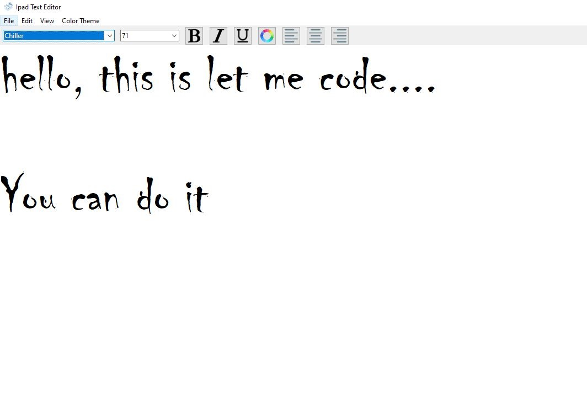

This is a Text Editor like Notepad with some extra features. Here You can change the color of your text,
make bold your text,
Do it Italic and much more.This Editor is created with Python's tkinter module.
themes are also availble here you can change themes inside the editor. Color chooser and font-family are also available
inside the editor modify font and font color according to Your choice.
